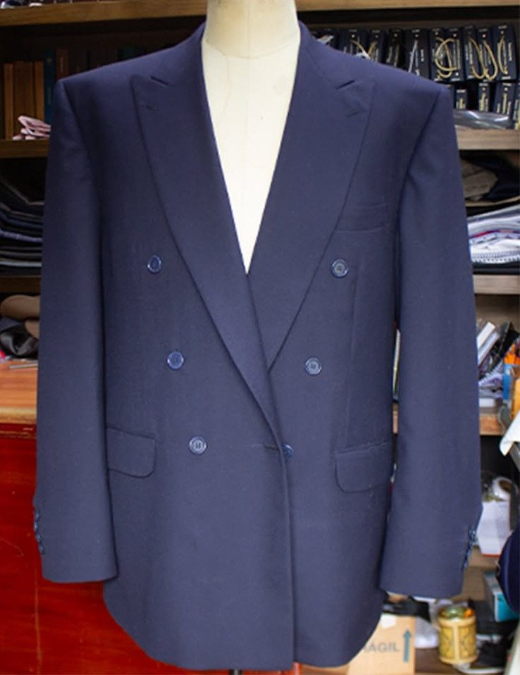
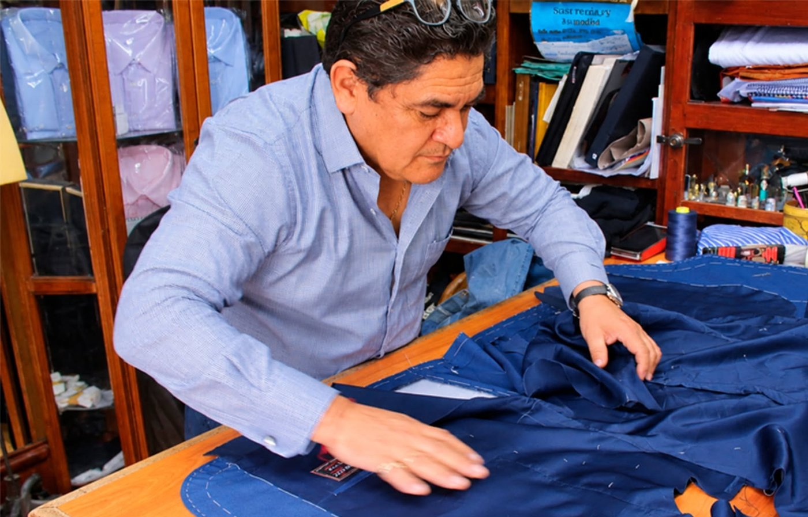
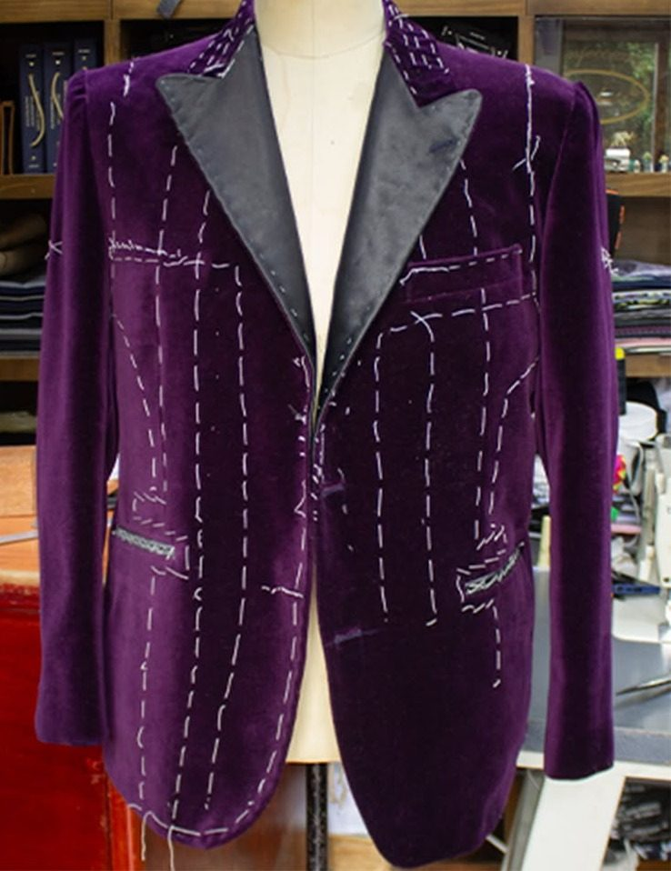

Traje
A la medida, para hombre y mujer. Saco y pantalón o falda, con chaleco si lo quieres.
Ver ejemplos →Ciudad de México · Sastrería a medida
Corte inglés para hombre y mujer: hombro estructurado, cintura definida y telas que duran años.
Agendar una cita

Marcos Méndez · Maestro sastreLa sastrería
Marlo's, de Marcos Méndez, ofrece sastrería auténtica: a medida, tradicional y artesanal, especializada en trajes para hombre y mujer. Trajes hechos a mano y totalmente artesanales: cada prenda se patrona sobre tu cuerpo, con telas que eliges tú y un ajuste final antes de la entrega.
#todoamano
VisítanosNuestras prendas
Todas nuestras prendas se hacen a la medida, para hombre y mujer.
A la medida, para hombre y mujer. Saco y pantalón o falda, con chaleco si lo quieres.
Ver ejemplos →A la medida, para hombre y mujer. Solo o para combinar con tus pantalones o faldas.
Ver ejemplos →A la medida, tipo sastre: lápiz, recta y otros cortes, a juego con tu saco o por separado.
Ver ejemplos →A la medida, para hombre y mujer. Combina con tu traje o se usa solo.
Ver ejemplos →A la medida, para hombre y mujer: formales, pachuqueñas, vaqueras y más estilos.
Ver ejemplos →Tu primer traje a la medida, para hombre y mujer: para quienes buscan su primer trabajo o ya están en él.
Ver ejemplos →Trabajos recientes
Nuestro trabajo


El proceso
Platicamos cómo y cuándo la vas a usar, y elegimos estilo y tela.
Tomamos tus medidas y observamos postura y hombros.
Probamos la prenda armada y afinamos largo, caída y comodidad.
Planchado final y entrega de tu prenda terminada.
Preguntas frecuentes
Una. Probamos la prenda armada y afinamos largo, caída y comodidad antes de entregarla.
Sí. Hacemos trajes, sacos, faldas, chalecos y camisas para mujer, y trajes, sacos, chalecos y camisas para hombre.
Sí. Tenemos una opción para quienes buscan su primer trabajo o ya están en él. Escríbenos y te orientamos.
Depende de la prenda y de la tela. En tu consulta te damos precio y fecha de entrega.
Llena el formulario de abajo y te contestamos por WhatsApp para confirmar horario.
Contacto
Escríbenos por WhatsApp y te confirmamos horario.
Londres 224, Col. Del Carmen, Coyoacán, CDMX
Solo WhatsApp 55 648 775 19
Lunes a viernes de 10:00 a 20:00 h
Sábados de 10:00 a 16:00 h